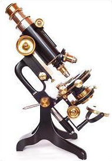
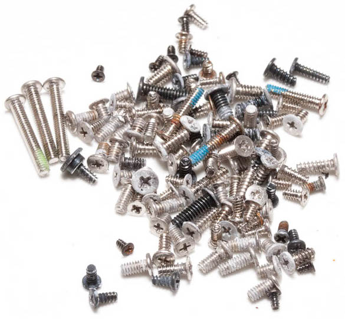
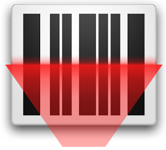
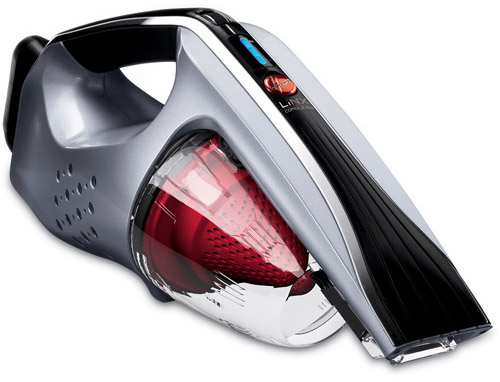

Combine Collections
Movie File Merger supports the selective combination/maintenance of video collections, movies, series, or documentaries on your hard disks. It can be used for other types of collections, but it is optimized for videos. The Lists tab is the main tab to combine video collections. Use it to move items around in the different lists, sort your collection, or rip the collection of a friend.
Select
Select which videos are copied or moved. Only videos in the Wish list are considered. To select videos or movies from your friends collection you just need his or her list. You can select them at home and once finished go to your friend and start copying.
Distribute

Lists are small for distribution over the internet. Once you have scanned your collection, you can send it to your friend, who can select what to copy offline.
Ignore

Videos in the Existing and Garbage lists are ingnored. That way you don't have to worry about copying the same crappy movies again and again.
Predefine
Select movies according to predefined genre lists from the internet, for example IMDb. Just drop the list in the Wish list and only videos from that genre are copied. If you want to ignore a complete category, then drop it in the Garbage list.
Filter
Select videos according to resolution, or other details such as media information; for example horizontal resolution is greater than 1000 pixels. Filters are Regular Expressions and really flexible.
Search

Search for movies or series information on the internet, like on TheTVDb. Drop any list entry on the Search for information drop area.
Download
Search for torrents on the web. Select the sites, which should be searched, and drop any list entry on the Download drop area.
Inspect 
List detailed media information with MediaInfo. Any videos in the Existing list are scanned with the relevant media information.
View
View video media information in the pop-ups when hovering over a list entry. Any videos in the Existing list are scanned with the relevant media information. Basic information is shown in the screen tip when hovering over the list entry.
Play
Play videos in the Import list with your default player. Drop any video existing on a connected hard disks on the Play drop area.
Rip 
Click on Just Rip It... to get all videos in the Import folder. Videos in the Existing and Garbage lists are not touched.
Scan 
Click on Just Scan It... to scan all videos in all top level folders on all hard disks connected to the computer. The top level folders have to contain the collection name, so that videos in that folder are put in the according collection.

Maintain Your Collections
Movie File Merger makes the maintenance of your collections easier. It points out bad names, supports moving and sorting into collection types. The Maintenance tab is used to cleanup your newly acquired videos and add-on files or to cleanup your collection in general. It is used in conjunction with the Windows Explorer or FileBot, but basically, you can use it with any program, which accepts file drops.
Suck 
Suck relevant files out of download folders. Irelevant files can be sucked into the recycle bin or just ignored. No need for the tiresome clicking until your fingers fall off.
Bin
Get rid of garbage files in your collections. Move irrelevant files into the Windows Recycle Bin.
Rename
Drop movies or series with bad names into FileBot to rename them.
Move

Move movies or series with good names in other folders. Move non related files in the Windows Recycle Bin.
Differentiate
Differentiate automatically between documentaries, series and movies. Good and bad names are highlights and non related files identified.
Check
Check if all files in your collection have a good name. Bad names, which are not following the naming conventions are pointed out. They can be dropped into FileBot, or any other program, which is specialized in renaming files.
Remember Your Collections
Movie File Merger helps you to remember your collections. As your collection grows it'll be impossible to remember everything.
Remember
Movie File Merger remembers all the videos you have. You'll never copy the same movie again and again.
Dump
Movie File Merger remembers all the video you don't want to have. You'll not copy the same crappy movies with a good title again and again.
Update
Movie File Merger is designed so that your collection information can be easily updated once out of date. Just Scan it takes a while if there are many new entries, but runs basically in the background.
Bring
Movie Filer Merger is portable, so that you can run it from anywhere, on any hard disk or memory stick, or even your phone is you use it as such.
Categorize
The videos are split into categories, which are easier to handled and remember. The Miscellaneous category can be used to remember temporarily things.
Keep

List can be archived to keep a history of your collection over time. To get a list of all the movies ever owned, they can be combined in a single large list.
Hidden Benefits
Movie File Merger is designed so that it is quite flexible. How and for what to use it depends basically on you. That means you'll have to use it for some time to figure out which way is best.
Backup
Considering the size of video files, it is not practical to have your collections double. It's a good idea to backup your video collections on hard disks of others. That way they can watch your videos and you safe space.
Gather
Social gathering when visiting your friend. Your two hard disks have to be brought together to make it happen. That's also a good opportunity to have a beer or two.
Save

Save internet bandwidth, because large data quantities are moved over USB or similar. Independent how fast your internet connection is, you are much faster using Movie File Merger.
Speed-up
Faster than backing up in the cloud. Transferring data over USB 3.0 is around 150 MB/s. When used to rip collections without too much thinking, that means that you'll get around 300 GB per hour. You can sort out the details later.
Evaluate
Your friends are checking the quality of movies before you get them. Bad stuff will be cut off at the roots and deleted before you can get it.
Explore
The other are searching the internet for good downloads for you, what is actually quite a lot of work. If you don't like something it can all the time be added to the Garbage list and deleted.
Movie File Merger Screenshots
The layout of Movie File Merger is improved frequently...
Application Screenshots
The screenshots shown below are based on Movie Filer Merger version 0.4.0.


 1
1 2
2 3
3 4
4 5
5 6
6On the Web
Movie File Merger can be found in many places on the web...


 1
1 2
2 3
3 4
4 5
5 6
6 7
7 8
8 9
9 10
10 11
11 12
12
That are just some examples.
Rewards/Reviews
Below are some rewards Movie File Merger got so far...


For a more comprehensive list of reviews go to the Movie File Merger Review Forum.

Movie File Merger is an interesting program for users who want to move or copy video files. It does not really
matter if you want to perform those operations on your own movie collection or if you use it to merge a friend's
collection with your own.

Movie File Merger is the most ideal program helpful with the selective
combination of video collections, like home videos, movies, series, or documentaries. As the name suggests, this
handy program enhanced with the latest technology and a fast and straightforward interface helps you with the
selective combination of video collections, like home videos, movies, series, or documentaries. It is also useful
with other collections, like music, or other files, and is optimized for videos. The tool also supports various
other features like: the option to select videos to be copied and moved, ability to copy relevant videos in the
Wish list, ability to ignore videos in the Existing and Garbage lists, ability to select movies according to
predefined genre lists from IMDb, ability to search for videos on torrentz.eu, and much more.
Movie File
Merger, this capable software also supports the option of playing the video with your default player.
 (From Google Translate)
(From Google Translate)
Movie File Merger is a tool that when you learn to use, has a lot to offer. It has
integrated search, allows you to delete the files from the original location and separates their lists in six
categories, something very interesting to organize videos on your computer.
Worth downloading Movie File
Merger, especially if you do not mind reading a lot about the program's functions before starting to use it.

Used to administer and join video collections or move selections to another location. In addition, MFM can
be used for other media like audio files, but the tool has been designed to deal with videos.
The user
interface looks friendly at the first run; it only requires importing the movie files, sorting them into the
provided categories. There are two main categories the 'Wish' is intended for the active records, and the 'Garbage'
is commonly used as a recycle bin area.
Moreover, it comes with six predefined categories, including general
movies, documentaries, adult, series and miscellaneous.
Users can manage the media lists easily; in fact,
it comes with the export/import functions, that enable to export a given list of records as CSV. In addition,
users will be able to import CSV lists of previously extracted items into the application; it allows to save
time and effort, enabling massive data exchange.
The 'Search Torrent' function, enables to search for a specific movie into the media site. In addition,
the IMDB procedure allows to search for the movie's information on the Internet Movie Database; it is useful
to complete the record's info.
It comes with the option to install the MediaInfo program, which displays
movie's detailed information; it is optional and should be installed separately.
The play video function,
provides users the ability of preview movies inside the application; it allows to define a custom player.
Another important feature is the extended support for diverse video formats, as default it comes with AVI,
MP4 and MKV and the user can add other formats in the option tab. The subtitle supported, includes SRT and SUB,
with other formats adding capabilities.
Finally, Movie File Merger is an useful program, intended for people
that need to administer long movie's collections; it offers a simple way to copy, move files and also enables
to merge collections taking care about duplications.